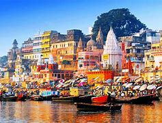

Varanasi, also known as Benares, is a city on the banks of the river Ganges in Uttar Pradesh, India. It is one of the oldest continuously inhabited cities in the world, and is considered the spiritual capital of India.

Varanasi is famous for its ghats, where pilgrims perform rituals. The city is known for its silk weaving, temples, and music.
The best time to visit Varanasi is during the winter months from October to March, when the weather is pleasant.
Popular attractions include the Kashi Vishwanath Temple, Dashashwamedh Ghat, Sarnath, and the Ganga Aarti ceremony.